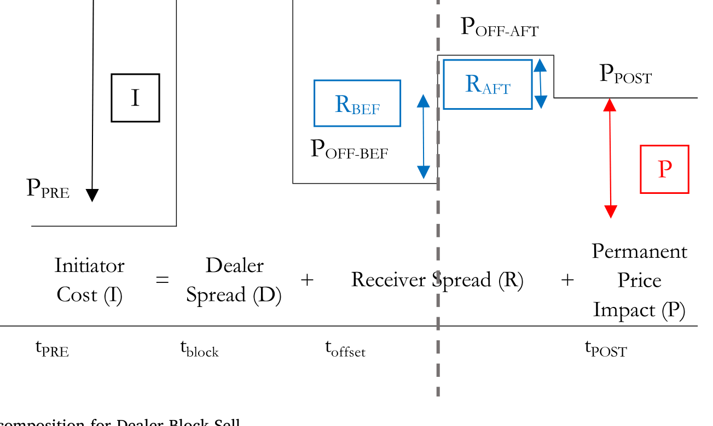
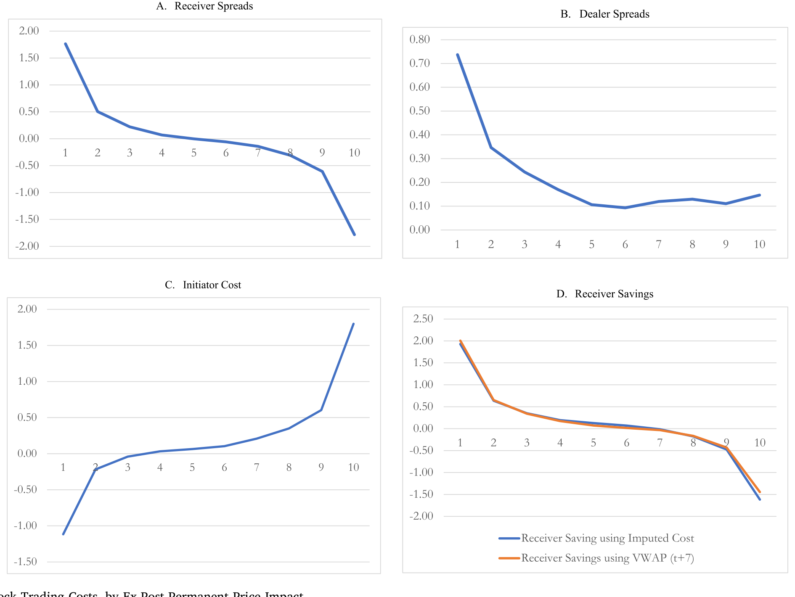
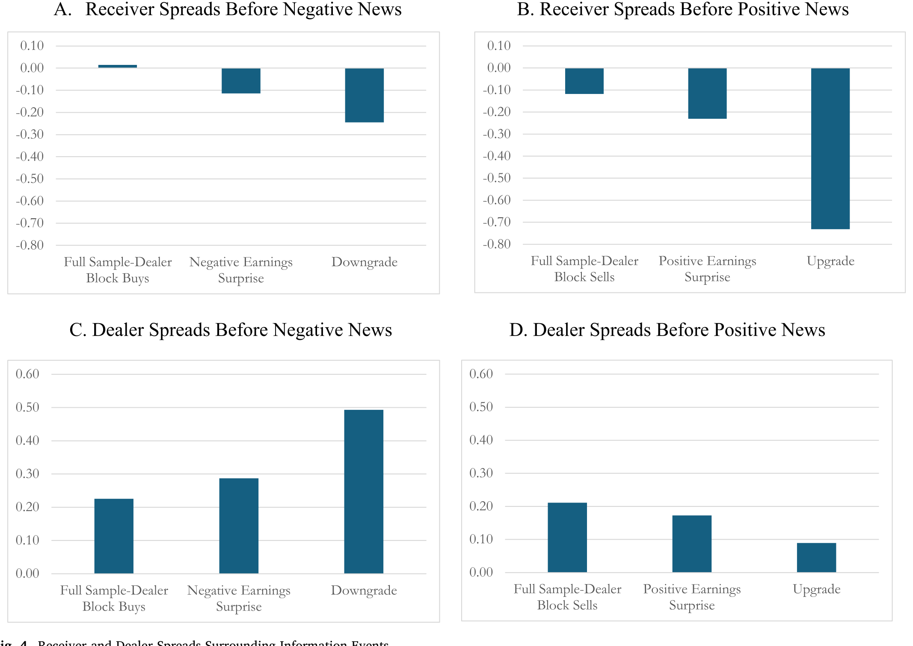
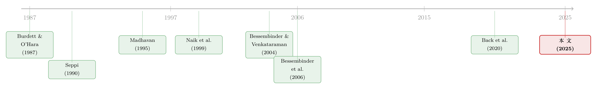

谁来接住这一大笔债券？——公司债大宗交易里被遗忘的「接盘人」
本文读的是 Jacobsen & Venkataraman (2025, Journal of Financial Economics)：在公司债的大宗交易里，真正承接交易商头寸的「接收方 (receiver)」，是这条链条上信息最少、也最容易吃亏的一方——他们享受了建仓/平仓的成本节约，却主要承担了逆向选择的代价；而强制成交申报会把交易商的私有信息「逼」出来、改善接收方的处境，可一旦申报被允许延迟，这份好处就大打折扣。
1 引言：交易桌上，其实坐着三个人
先想象一个场景。一家大型机构想一次性卖掉一笔 2000 万美元的公司债。它不会、也没法像在股票市场那样把单子切碎了挂到匿名交易所上慢慢出——公司债是在场外 (over-the-counter, OTC) 市场里一笔一笔谈出来的，非匿名、不连续。于是它找到一家交易商，交易商以自营 (principal) 的身份先把这笔债接下来。
故事讲到这里，绝大多数文献就停下来了：要么研究那个发起交易的人 (initiator)——他付了多少流动性成本？要么研究交易商 (dealer)——他赚了多少价差、扛了多少存货风险？
可是，交易商把这一大笔债接下来之后，总得出手吧。他要把这笔头寸转移给别人。那个「别人」是谁？
这就是本文要把聚光灯打过去的第三个人——接收方 (receiving investor, 简称 receiver)。交易商手里烫手的头寸，最终是被一连串接收方一点点吃下去的。理论模型早就给他安排了戏份：从 Burdett 和 O'Hara (1987) 的「building blocks」，到 Naik 等 (1999)、再到 Back 等 (2020)，大宗交易的标准剧本都是「交易商先持仓、再分销」。可问题在于——
公开数据库（比如美股的 TAQ）根本不告诉你一笔交易的双方是谁。于是这些关于接收方最基本的理论预测，几十年来一个都没被真正检验过：数据里看到的，是各种交易者类型混在一起的「一锅粥」。
接着，一个自然的问题就浮出来了：在这条链条上，接收方恰恰是信息最少的那个人。发起方可能握着私有信息；交易商在双边谈判里能从大宗交易的规模、价格、对手身份里部分推断出对方的动机；唯独被交易商主动找上门、问「这批债你接不接」的接收方，连那笔尚未申报的大宗交易发生过没有都不知道。他像是在牌桌上最后一个摊牌、却最先下注的人。
那么真正关键的问题来了：在这种信息劣势下，接收方到底是赚是亏？如果他注定要被逆向选择「割」一刀，他为什么还年复一年地坐到这张桌子上来？
这篇发在 JFE 上的论文，就是冲着这两个问题去的。
2 把成本拆开：三方框架与一个核心等式
要回答「谁吃亏」，得先把一笔大宗交易的成本拆给具体的人。作者沿用了 Kraus 和 Stoll (1972) 以来的股票大宗交易方法，但把它重新切成了适配三方框架的形态。
我们以一个「交易商卖出 (Dealer Block Sell)」的情形为例：交易商把一批债卖给发起方（成交价 \(P_B\)），再转身从接收方那里买回同样的债（加权平均价 \(P_{OFF}\)）来对冲头寸。沿着时间轴有四个价格：交易前的均衡价 \(P_{PRE}\)、大宗成交价 \(P_B\)、对冲价 \(P_{OFF}\)、以及交易后市场重新形成的均衡价 \(P_{POST}\)。
发起方付出的总成本是 \(P_B - P_{PRE}\)。本文的核心，是把它拆成下面这个恒等式——这其实就是全文的「中心方程」：
这个拆法的妙处在于：前两项之和 \((P_B - P_{POST})\) 是暂时性/流动性效应 (temporary, liquidity effect)，第三项是永久性/信息效应 (permanent, information effect)。而流动性效应又被进一步切成了「交易商赚的」和「接收方拿的」两块。
请特别盯住中间那一项 \(a2\)。对一笔交易商卖出而言，接收方价差 \(= P_{OFF} - P_{POST}\)。直觉上这应该是正的：接收方低价买入、为提供流动性拿一点补偿。但当信息效应很强时，\(P_{POST}\) 会被推得很高，高过 \(P_{OFF}\)，于是这一项变成负数——意思是接收方接手的价格，比交易尘埃落定后的新均衡价还低，他白白让出了一块价值。这块负价差，正是接收方为「参与」所付的机会成本。
图 1 把这套分解画得很清楚（图 A 先拆暂时/永久，图 B 再把暂时部分拆成交易商价差和接收方价差，图 C 则演示了信息事件下接收方在「申报前 vs 申报后」承接的不同命运）。

Figure 1: Block Trading Cost Decomposition for Dealer Block Sell
3 数据：把链条上的每一笔都对上号
光有框架不够，得有能看见对手身份的数据。作者用的是 FINRA 提供的增强版 TRACE (enhanced TRACE) 成交数据——它带有交易商编号、未经掩码的真实成交量，并且把已对外披露和未披露的交易全都收了进来。配合 Mergent FISD 的债券发行信息，作者开发了一套方法，去识别「哪一笔是发起的大宗交易、哪些笔是交易商随后与接收方的对冲交易」。值得一提的是，这套识别方法恰恰在公司债这种交易稀疏的市场里更精准——稀疏反而成了优势，因为相关交易更容易被「串」起来。
最终样本：205,104 笔单笔超过 $15M 的公司债大宗交易，外加 690,418 笔交易商与接收方的对冲交易，覆盖 2002–2021。一个有意思的描述性事实：交易商通常用 3 到 4 个对手方来消化一笔大宗头寸，接收方单笔平均规模约 $9M——这说明接收方绝大多数是机构投资者，而非散户。
超过 $15M 的大宗交易，在过去二十年里占到了公司债成交量的近 15%。这不是边角料市场，而是机构进出大头寸的主干道。
4 主要结果：吃亏的，主要是接盘人
先看平均数。整段往返的交易商价差平均 22 bp，发起方成本平均 18 bp，二者都随大宗规模上升——块头越大，越像是带着私有信息来的，给交易商扛的存货风险也越大。而接收方价差平均只有 −3 bp：是负的。
更关键的是信息效应的分布。这些交易的永久价格冲击中位数只有 1.4 bp，几乎为零——平均看上去人畜无害。但分布有一条又长又毒的右尾：第 66 和第 75 百分位的永久冲击分别高达 25 bp 和 52 bp。也就是说，大多数大宗交易不带信息，但少数带着大量信息，足以让接盘人血本无归。
那么，当信息真的来了，谁来买单？作者用了三组互相印证的设计。
第一，买卖不对称。 已有研究（Cai 等, 2019; Anand 等, 2021）发现，公司债市场里持续的客户买入往往对应价格发现，而持续卖出常常只是引发反转。本文在大宗交易里看到同样的不对称：交易商卖出的永久冲击高于交易商买入。结果是——交易商价差在买、卖两侧都为正、量级相近（交易商预判到了信息风险并对冲掉了）；而接收方在「交易商卖出」这一侧没能谈到一个更高的对冲价 \(P_{OFF}\)，价差砸到 −12 bp；在基本不带信息的「交易商买入」一侧，接收方价差则微正（+1 bp）。一句话：接收方无法预判信息效应，交易商可以。
第二，按事后冲击分组。 把大宗交易按事后永久价格冲击排成十分位组合，会看到一条清晰的剪刀差：越是信息含量高的组，接收方越吃亏，而交易商价差基本纹丝不动。如图 3 所示，逆向选择的成本几乎被整段转嫁给了接收方。

Figure 3: Block Trading Costs, by Ex-Post Permanent Price Impact
第三，事件前的「内幕」窗口。 作者进一步挑出那些发生在信用评级变动、大额盈余意外等重大信息事件之前的大宗交易。如图 4 所示，在信息事件前的窗口里，损失集中地落在接收方身上，而交易商的价差大体不受影响——接收方实实在在地承担了与知情大宗交易相关的逆向选择。

Figure 4: Receiver and Dealer Spreads Surrounding Information Events
到这里，本文的第一个核心结论已经立住了：在公司债大宗市场里，逆向选择的账单，主要是接盘人在付。 交易商凭借在双边谈判中观察规模、价格、对手身份的信息优势，把风险预判并转嫁了出去。
（顺带一提，这种「交易商凭信息优势对不同客户区别定价」的逻辑，和《同样的交易商，不同的客户：核心—边缘网络是被「挑」出来的》、以及《无风险市场里的风险厌恶：是谁给做市商系上了「风险限额」这根绳》讲的是同一枚硬币的不同侧面。）
5 那他们为什么还来？——被低估的「成本节约」
如果接盘注定要挨一刀，接收方为什么不退场？
于是反转出现了。作者回到 Burdett 和 O'Hara (1987) 的预测：接收方之所以参与，是因为他们本来就想建仓或平仓，而通过承接交易商的大宗头寸来完成，比自己跑到市场上去发起一笔同等规模的交易便宜得多。Grossman (1992) 也早有论断——接收方是「天然的对手方」，他们潜在的交易意愿恰恰是交易商所知道、并能撮合的。
这正是「中介存在的意义」的另一种讲法：把头寸先交给中介、再由中介去匹配潜在需求，反而能省下自己冲进市场的流动性溢价。（这一思路，可参见《承诺去交易：为什么「先卖给中间商」反而能治好柠檬市场》。）
作者用两种方法量化这份节约。其一，用一个交易成本模型，把接收方实际的价差，和他若自己发起一笔同等规模交易将要付的「模型隐含成本」相比；其二，把接收方的对冲价，和 TRACE 上同方向交易的一个假想价格相比。两种方法给出的结论一致，而且很提气：即便把信息效应算进去，接收方在「交易商买入」一侧仍能净赚 +20 bp，在「交易商卖出」一侧至少不更差（+1 bp）。
换句话说，接盘人不是被骗来的傻子。他们清楚自己有一定概率吃信息的亏，但平均算下来，借交易商的车进出大头寸，依然比自己步行划算。这份成本节约，正是大宗市场对接收方的吸引力所在。
6 透明度：把交易商的私有信息「逼」出来
但故事还有最后、也是政策含义最重的一层：信息环境是可以被制度设计改变的。
接收方的根本劣势在于「看不见」。那如果监管强制把大宗交易申报披露出来呢？理论（Madhavan, 1995; Back 等, 2020）预测：及时披露会把交易商手里的私有信息释放给市场，从而拉平信息的赛场，让信息较少的接收方在和交易商谈判时拿到更好的条件——而信息本就充分的发起方，受影响不大。
作者抓住了两类制度变迁来做检验。
其一，透明度事件 (transparency events)。 即 2003、2004、2005 年对公开公司债、以及 2014 年 6 月对非公开 144A 债券首次引入强制成交申报。结果与文献一致：申报制度的引入压低了大宗市场上的交易商价差。但本文的新意在于揭示了影响的不对称——好处主要流向信息较少的接收方，发起方基本无感。
其二，延迟事件 (delay events)。 这才是政策辩论的真正火药桶。FINRA 在 2003–2006 年间把允许的最长申报延迟从 75 分钟一路砍到 45、30、最后到 15 分钟。交易商和行业团体一直坚持：实时申报会让他们没法从容地拆解一笔大宗头寸，因此延迟至关重要——它给了交易商在信息披露前先把头寸部分对冲掉的窗口。而 Back 等 (2020) 的模型预测：在大宗交易披露之后承接的接收方，会比披露之前承接的拿到更优的条件。
作者用一个「块内 (within block)」设计来验证：在同一笔大宗交易内部，控制住交易、债券、市场条件，比较申报前与申报后的对冲交易。结论很干净：在每个延迟制度下，申报后承接的接收方都拿到了显著的成本下降，幅度在 5 bp 到 11 bp 之间；交易商价差则呈现完全相反、对称的变化。
把两件事拼起来，本文第二个核心结论就是：强制申报本身有利于接收方——但前提是它要「及时」。允许延迟，等于把信息优势又还回交易商手里，接收方的好处随之缩水。 这对当下「把大宗申报延迟从 15 分钟放宽到 48 小时」与「缩短到 1 分钟内」两套对立的监管提案，提供了直接的实证弹药。
而真正发人深省的是结尾那一笔：作者警告，这套机制里藏着脆弱性 (fragility)——如果信息不对称严重到某个程度，接收方可能干脆退出大宗市场。一旦没人愿意接盘，交易商也就不敢再用自营资本去吃大宗头寸，整条流动性主干道都会变细。Volcker 规则已经压低了交易商投放资本的意愿，接收方因此变得更重要；而透明度制度的设计，恰恰决定了这群人愿不愿意留在桌上。
7 文献脉络
把这条线索拉直了看，会更清楚本文站在哪儿。
最早，大宗交易的价格效应是从股票市场做起来的：Kraus 和 Stoll (1972) 教会大家把大宗交易的价格冲击拆成暂时与永久两块。理论上，Burdett 和 O'Hara (1987) 用「building blocks」一文奠定了「交易商持仓—分销」的框架，并第一次明确给接收方安排了角色；Seppi (1990) 论证了交易商如何通过甄别知情发起方来降低逆向选择。
接着，研究主线转向了透明度：Madhavan (1995) 把「交易信息披露」放进了市场分割与整合的框架；Naik 等 (1999) 专门研究了「可议价交易市场」里的申报监管；实证上，Madhavan 和 Cheng (1997) 在股票的 upstairs/downstairs 市场里寻找流动性的踪迹，Bessembinder 和 Venkataraman (2004) 追问「电子交易所还需不需要 upstairs 市场」。

然后，舞台搬到了公司债：Bessembinder、Maxwell 和 Venkataraman (2006) 记录了 TRACE 引入后透明度对机构交易成本的冲击；O'Hara、Wang 和 Zhou (2018) 揭示了公司债的执行质量与交易商的市场势力；理论上 Back、Liu 和 Teguia (2020) 把 OTC 市场里「信号传递—透明度的成本与收益」讲到了新的高度。
但真正关键的一步在于：上述所有工作，要么停在发起方/交易商，要么受困于「看不见对手身份」的数据。本文 (2025) 第一次用带对手方身份的增强版 TRACE，把接收方从那锅混合数据里单独捞出来，直接检验了 Burdett-O'Hara 这条线最基本、却几十年没被验证过的预测。 这正是它的位置所在。
（关于公司债定价里「谁在持有」这一更宏观的视角，可参见《谁在持有这张债券，决定了它的价格》；关于「谁能看见、谁就占便宜」的透明度逻辑在另一个场景里的演绎，则可参见《谁能进这间「暗房」，决定了你的成交成本》。）
8 评论与延伸（Q&A + 研究方向）
(a) 几个可能的疑问
Q：接收方价差为负，是不是单纯因为他们「技不如人、谈判太弱」？
不全是。本文的设计恰恰把「谈判能力弱」和「承担信息成本」分开了：交易商价差在买卖两侧都为正且量级相近，说明交易商预判了信息风险；接收方的负价差集中出现在信息效应强（交易商卖出、事件前、高冲击十分位）的情形，而非所有交易。所以更准确的说法是：接收方不是普遍被宰，而是专门在信息大的那部分交易上承担了逆向选择——因为他们看不见。
Q：「接收方」和把单子拆碎、隐蔽下单的散户/小单有什么本质区别？
区别在于角色，而非规模。接收方是供给流动性、对冲交易商头寸的一方（单笔平均
$9M，是机构），而发起方是需求流动性的一方。本文最干净的贡献之一，正是用数据把「发起交易（增加交易商存货）」和「承接交易（抵消交易商存货）」这两类客户交易在同一只债上区分开来——这在股票数据里几乎做不到。
Q：永久冲击中位数才 1.4 bp，是不是说明大宗交易其实没什么信息？
平均/中位看确实温和，这和股票文献里「大宗交易往往是风险分担、信息含量低」的发现一致。但本文强调的是分布的右尾：第 75 百分位的永久冲击高达
52 bp。市场的脆弱性恰恰来自这条尾巴——平时风平浪静，少数知情大宗却足以让接盘人重创，进而动摇他们参与的意愿。
Q：「块内」比较真的能识别出延迟的因果效应吗？会不会是申报前后承接的债本身就不一样？
这是最该担心的地方。块内设计控制了交易、债券发行、市场条件，把「同一笔大宗、申报前 vs 申报后」的对冲交易拿来比，已经很大程度上吸收了债券和时点层面的异质性。但仍有残余隐忧：交易商可能策略性地选择先把哪一部分头寸、卖给哪一类对手、放在申报前消化（比如先出给最不知情的人）。这种选择若与信息相关，估计量就会被污染。作者用多组子样本做了稳健性，但这条识别担忧很难被完全消除。
Q：这套结论能不能外推到股票或其它更透明的市场？
要小心。作者专门选公司债，正是因为它流动性差、交易商存货风险大、且 OTC 非匿名谈判让发起方藏不住单——这些特征同时放大了信息不对称、又让识别方法更精准。换到高频、匿名、可拆单的股票市场，接收方的劣势和透明度的边际作用都可能大不一样。这是优势，也是边界。
Q：监管含义到底偏向「实时申报」还是「允许延迟」？
本文没有简单站队，但天平是清楚的：及时的强制申报让信息少的接收方受益，而延迟把信息优势还给交易商、削弱接收方的好处。所以若监管目标是保护「接盘人」这一关键的流动性供给群体、维持市场韧性，本文的证据更支持缩短而非延长延迟——尽管这会牺牲交易商从容拆仓的便利。Harris (1992) 早就说过：透明度规则注定是「让一些人受益、让另一些人受损」，关键是想清楚你要保护谁。
(b) 几个可能的研究问题与提案
1. 外资接收方 vs 本土接收方：信息劣势是否「国籍有别」？
【经济故事】本文把接收方当成同质的一群。但外资机构在美国公司债市场里很可能信息更滞后、关系网络更浅，因而在大宗承接中承担更重的逆向选择。如果是这样，外资其实在为本土做市生态补贴流动性。 【可行性】中。需要把增强版 TRACE 的对手方与机构持有人数据（如 eMAXX / 13F-equivalent 的债券持有）匹配出国籍标签，识别上可沿用本文「块内」框架，按对手方国籍分层。难点在对手方身份到机构属性的匹配精度。
2. 接收方退出的「临界点」：信息冲击何时真的吓退接盘人？
【经济故事】本文提出脆弱性假说，却主要是横截面证据。一个更锋利的问题是：在 2020 年 3 月这类信息/流动性骤紧的窗口里，接收方是否真的撤离了大宗市场、交易商对冲一笔大宗需要的对手方数量是否骤降、对冲时长是否拉长？ 【可行性】高。本文数据已含对冲对手数与时点，把样本聚焦到危机窗口、做事件时间序列即可。可与《利率长跌二十年…影子银行》之外的危机流动性文献对话。属于本文数据的自然延伸，doable。
3. 关系型交易商是否让接收方少吃信息的亏？
【经济故事】文献（Di Maggio 等, 2017; O'Hara 等, 2018）表明关系能压低交易成本。那么常与某交易商承接头寸的「熟客」接收方，是否被更少地转嫁逆向选择——还是反过来，关系让他们更难拒绝接下烫手头寸？ 【可行性】高。用对手方编号构造接收方—交易商的关系强度指标，放进本文的价差回归即可。识别担忧在于关系本身的内生选择。
4. 把「接收方价差」做成一个交易商存货风险/市场韧性的实时指标。
【经济故事】既然接收方价差在信息大时变负、在交易商存货压力大时被压低，那么它的横截面/时序均值，可能是一个领先于流动性枯竭的预警信号。 【可行性】中。指标构造直接，但要证明其预测价值需谨慎处理与已知流动性指标（如 Kargar 等, 2022 的成本度量）的共线性与领先滞后关系。
我的判断
这篇论文最大的贡献，是方法上把不可见变可见：用带对手方身份的增强版 TRACE，把大宗交易链条上最沉默、却理论上最重要的接收方单独识别出来，第一次让 Burdett-O'Hara 那条几十年没被检验的预测落了地。结论本身既符合理论又有反差感——接收方明知会被信息割一刀，却因为成本节约而留下；而透明度的作用，精确地取决于「申报是否及时」。这对当下两套针锋相对的延迟提案是难得的直接证据。
要打的问号也很清楚，集中在识别：一是「初始大宗交易」与「对冲交易」的串联本身是一道估计，分类误差会顺着所有下游结果传播，作者用子样本稳健性缓解，但无法证否；二是块内延迟分析里，交易商选择把哪部分头寸放在申报前后消化这一策略行为，可能与信息相关，从而污染因果解读。这些不是致命伤，但读者在引用其量级（尤其 −12 bp、5–11 bp 这类数字）时应记得它们建立在一套识别假设之上。
我最想接着看到的，是脆弱性假说的动态检验：在真正的压力时点上，接收方是不是会成群退场、交易商对冲一笔大宗需要找的人是不是会突然变多、变慢。本文给了一个极有说服力的横截面快照，但「这套机制会不会在危机里自我崩坏」这件事，值得用时间序列正面回答一次。
参考文献
Anand, A., Jotikasthira, C., Venkataraman, K. (2021). Mutual fund trading style and bond market fragility. Review of Financial Studies 34(6), 2993–3044.
Back, K., Liu, R., Teguia, A. (2020). Signaling in OTC markets: Benefits and costs of transparency. Journal of Financial and Quantitative Analysis 55(1), 1–59.
Barclay, M.J., Warner, J.B. (1993). Stealth trading and volatility: Which trades move prices? Journal of Financial Economics 34(3), 281–305.
Bessembinder, H., Venkataraman, K. (2004). Does an electronic stock exchange need an upstairs market? Journal of Financial Economics 73(1), 3–26.
Bessembinder, H., Maxwell, W., Venkataraman, K. (2006). Market transparency, liquidity externalities, and institutional trading costs in corporate bonds. Journal of Financial Economics 82, 251–288.
Burdett, K., O'Hara, M. (1987). Building blocks: An introduction to block trading. Journal of Banking & Finance 11(2), 193–212.
Cai, F., Han, S., Li, D., Li, Y. (2019). Institutional herding and its price impact: Evidence from the corporate bond market. Journal of Financial Economics 131, 139–167.
Madhavan, A. (1995). Consolidation, fragmentation, and the disclosure of trading information. Review of Financial Studies 10(4), 1035–1064.
Madhavan, A., Cheng, M. (1997). In search of liquidity: Block trades in the upstairs and downstairs market. Review of Financial Studies 10, 175–203.
Madhavan, A. (2000). Market microstructure: a survey. Journal of Financial Markets 3, 205–258.
Naik, Y., Neuberger, A., Viswanathan, S. (1999). Trade disclosure regulation in markets with negotiated trades. Review of Financial Studies 12(4), 873–900.
O'Hara, M., Wang, Y., Zhou, X. (2018). The execution quality of corporate bonds. Journal of Financial Economics 130, 308–326.
Seppi, D. (1990). Equilibrium block trading and asymmetric information. Journal of Finance 45, 73–94.